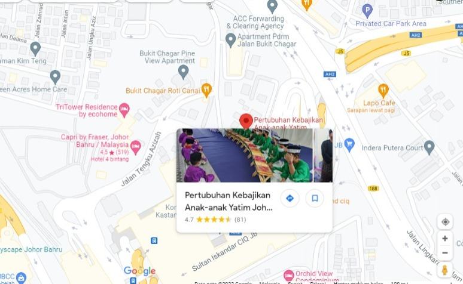

- Home History of Establishment Organization Chart Location Donation Information Contact Us Gallery Terms of Use Privacy Policy
LOCATION
"Rumah Barkat" is located at No 118 Jalan Bukit Cagar, 80300 Johor Bahru, Johor, Malaysia. Johor Bahru is the capital state of Johor and it is located at the southern end of Peninsular Malaysia. To those people who would like to visit "Rumah Barkat", you can click on the map to view the location.


© 2022 Pertubuhan Kebajikan Anak-Anak Yatim Johor (Rumah Barkat). All Right Reserved.
Chrome is Recommended. Recommended Resolution is 1366x768
This Website is for HTML Assignment only